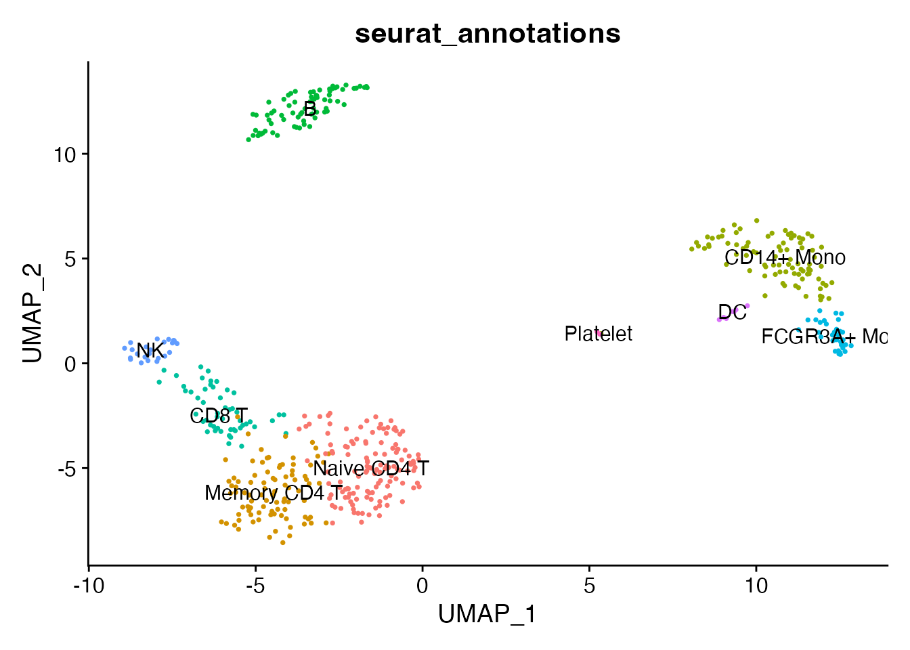
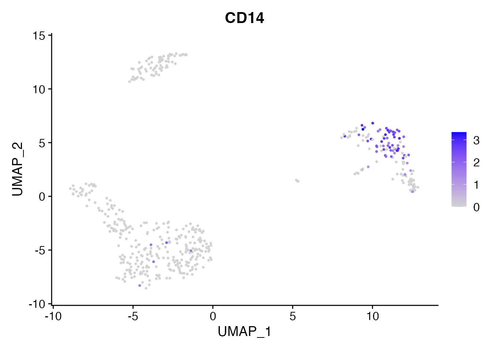
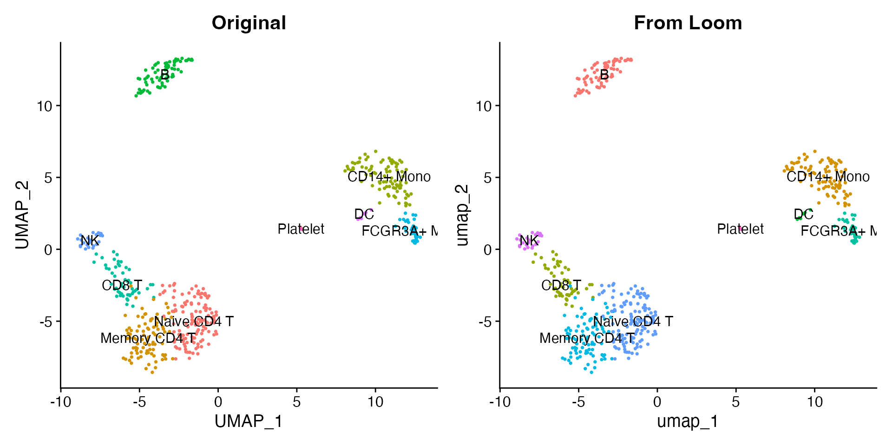
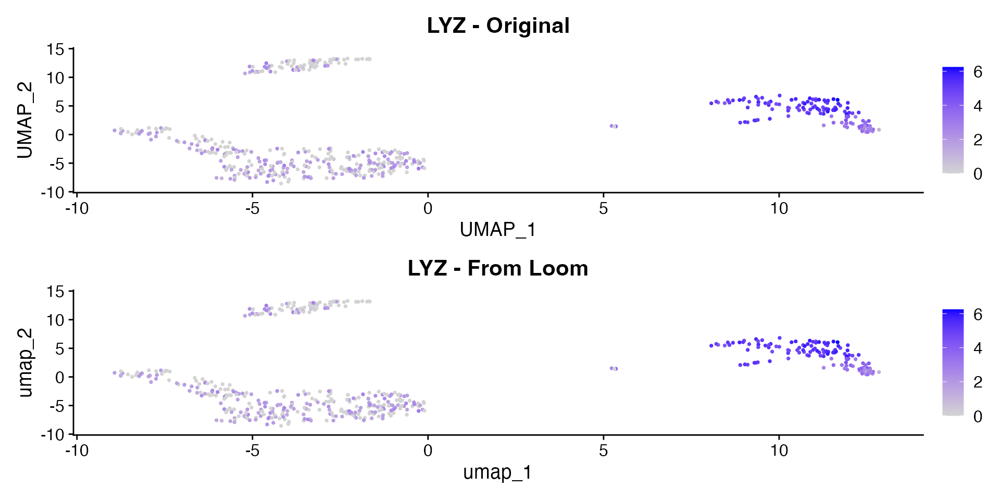
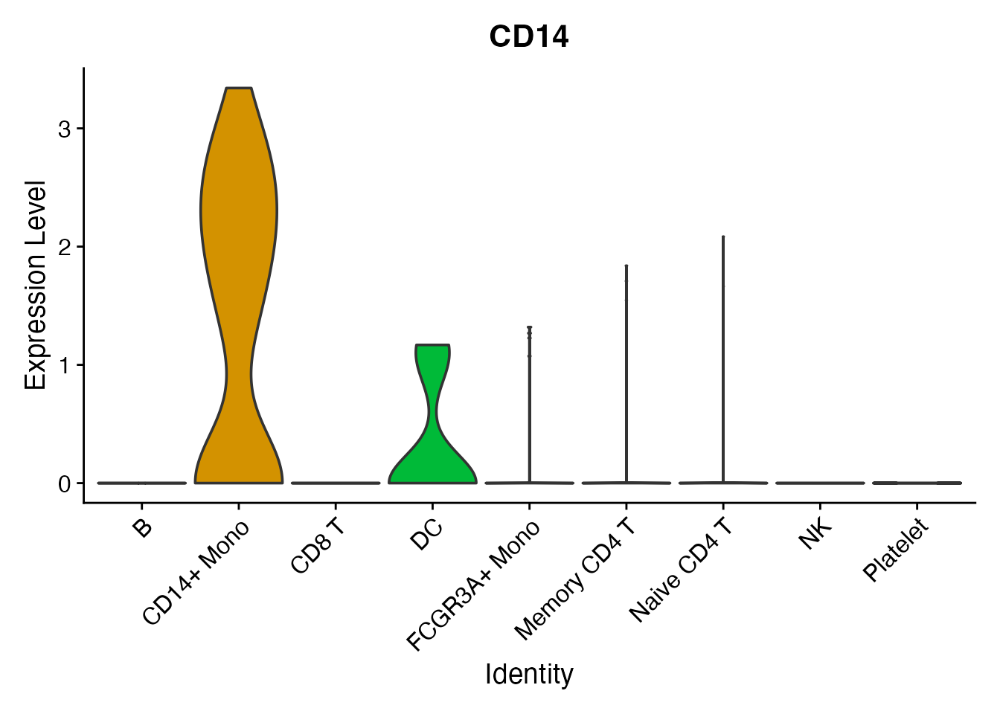

The Loom format is an HDF5-based
file format used by loompy and velocyto/scVelo for RNA velocity
workflows. scConvert provides writeLoom() and
readLoom() for converting Seurat objects to and from Loom
with no external dependencies.
Load the demo data
We use the shipped 500-cell PBMC demo dataset with PCA, UMAP, clusters, and nine annotated cell types.
pbmc <- readRDS(system.file("extdata", "pbmc_demo.rds", package = "scConvert"))
pbmc
#> An object of class Seurat
#> 2000 features across 500 samples within 1 assay
#> Active assay: RNA (2000 features, 2000 variable features)
#> 2 layers present: counts, data
#> 2 dimensional reductions calculated: pca, umap
DimPlot(pbmc, reduction = "umap", group.by = "seurat_annotations",
label = TRUE, pt.size = 0.5) + NoLegend()
Let us also look at CD14, a marker for monocytes, before conversion:
FeaturePlot(pbmc, features = "CD14", pt.size = 0.5)
Write to Loom
writeLoom() saves the default assay’s expression data as
the main matrix, with cell metadata as column attributes and gene
metadata as row attributes. Dimensional reductions are stored as
additional column attributes.
Read it back
readLoom() loads the Loom file as a Seurat object. The
cells and features parameters control which
column/row attributes are used for cell and gene names (defaults:
"CellID" and "Gene").
pbmc_rt <- readLoom(loom_path)
pbmc_rt
#> An object of class Seurat
#> 2000 features across 500 samples within 1 assay
#> Active assay: RNA (2000 features, 0 variable features)
#> 2 layers present: counts, data
#> 1 dimensional reduction calculated: umap
cat("Original:", ncol(pbmc), "cells,", nrow(pbmc), "genes\n")
#> Original: 500 cells, 2000 genes
cat("Loaded: ", ncol(pbmc_rt), "cells,", nrow(pbmc_rt), "genes\n")
#> Loaded: 500 cells, 2000 genes
cat("Metadata preserved:", paste(
intersect(colnames(pbmc[[]]), colnames(pbmc_rt[[]])), collapse = ", "), "\n")
#> Metadata preserved: orig.ident, nCount_RNA, nFeature_RNA, seurat_annotations, percent.mt, RNA_snn_res.0.5, seurat_clustersCompare expression
Expression values and cell metadata are preserved through the round-trip. Loom stores dimensional reductions as column attributes, so UMAP and PCA coordinates are available after loading.
library(patchwork)
p1 <- DimPlot(pbmc, reduction = "umap", group.by = "seurat_annotations",
label = TRUE, pt.size = 0.5) + NoLegend() + ggtitle("Original")
p2 <- DimPlot(pbmc_rt, reduction = "umap", group.by = "seurat_annotations",
label = TRUE, pt.size = 0.5) + NoLegend() + ggtitle("From Loom")
p1 + p2
The LYZ expression pattern (a monocyte marker) is identical before and after conversion:
p1 <- FeaturePlot(pbmc, features = "LYZ", pt.size = 0.5) + ggtitle("LYZ - Original")
p2 <- FeaturePlot(pbmc_rt, features = "LYZ", pt.size = 0.5) + ggtitle("LYZ - From Loom")
p1 + p2
A violin plot confirms the per-cluster distribution is preserved:
VlnPlot(pbmc_rt, features = "CD14", group.by = "seurat_annotations", pt.size = 0) +
NoLegend()
What is preserved
Loom is a simpler format than h5ad or h5Seurat. Here is a summary of what round-trips and what does not:
| Component | Preserved? | Notes |
|---|---|---|
| Expression matrix | Yes | Stored as /matrix
|
| Raw counts | Yes | Stored in /layers/counts
|
| Cell metadata | Yes | Each column becomes a /col_attrs entry |
| Gene metadata | Yes | Each column becomes a /row_attrs entry |
| PCA / UMAP embeddings | Yes | Stored as column attributes |
| Nearest-neighbor graphs | No | Not native to Loom; recompute with FindNeighbors()
|
Using scConvert() for format conversion
You can also convert Loom files to other formats using the
scConvert() dispatcher without loading into R:
Python interop (optional)
If you have Python with loompy installed, you can read the Loom file directly.
# Requires Python with loompy installed
import loompy
with loompy.connect("pbmc.loom") as ds:
print(f"Shape: {ds.shape[0]} genes x {ds.shape[1]} cells")
print(f"Row attributes: {list(ds.ra.keys())}")
print(f"Column attributes: {list(ds.ca.keys())[:10]}")
print(f"Layers: {list(ds.layers.keys())}")You can also load Loom files into scanpy as AnnData objects:
Clean up
unlink(loom_path)